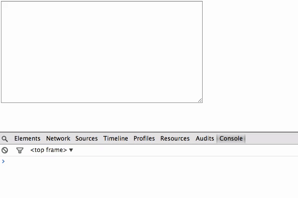
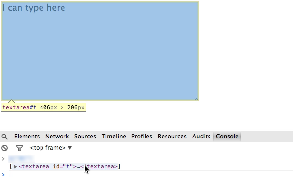
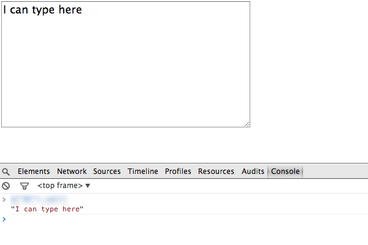
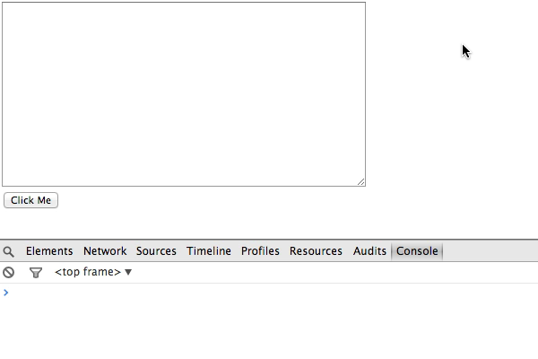
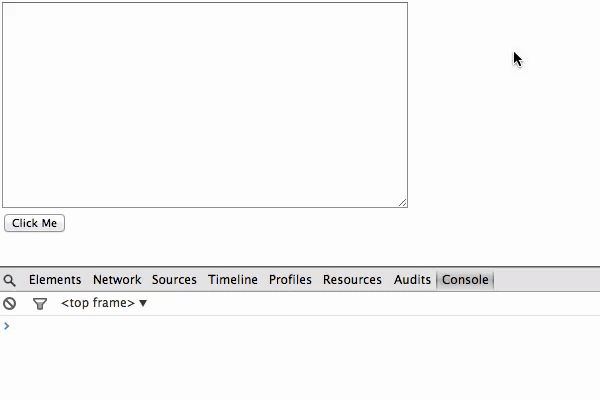
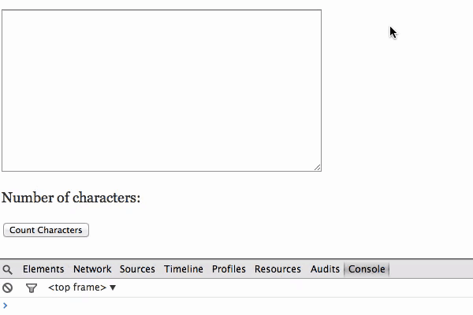
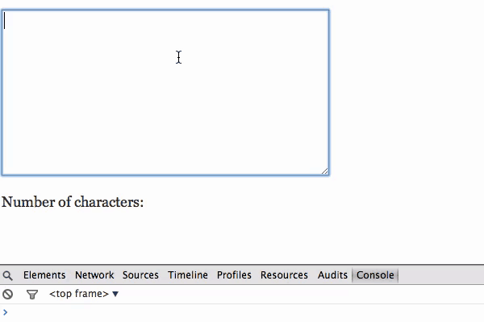
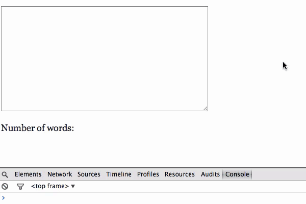
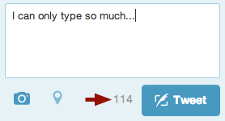

<!DOCTYPE html>
<html>
<head>
<title>Word Count</title>
<script src="../vendor/jquery-2.1.0.min.js"></script>
<script src="../vendor/underscore-min.js"></script>
<script src="../vendor/marked.js"></script>
<script src="../main.js"></script>
<link href='http://fonts.googleapis.com/css?family=Waiting+for+the+Sunrise' rel='stylesheet' type='text/css'>
<link rel="stylesheet" href="../style.css" type="text/css" media="screen" charset="utf-8" />
</head>
<body>

<div class="markdown">
<!--

# Word Count

***

Make an HTML file. Put a `<textarea>` in it. Feel free to style it as you like.



***

Give the textarea an `id` attribute. Include jQuery on your page with a `<script src="..."></script>`.

*In the console, write an expression to select the textarea with jQuery*. You can hover over the element in the console to confirm that it really selected the right thing.



***

In the console, write an expression to get the textarea's current text value as a string.



***

Make a `<button>`.



***

Put a click event handler on the button, make it output something to the console when clicked.



Hint: Look up `on` in the jQuery documentation.

***

Make the button output the character length of what's in the textarea somewhere on the page. Think about the subproblems:

* How do you count the number of characters in the textarea?
* How do you put that number onto the page in the spot where you want it to appear?
* How do you hook up everything with the button?

If possible, *don't try to write out all the code at once*. Instead, write some code to solve one of the subproblems and check that it works. Remember you can often write one-liners in the console to see if they do what you expect!

Repeat until you've solved the entire problem.



***

Get rid of the button and make it output the length as you type.



Hint: One approach is to listen for an `input` event on the textarea.

***

Make it output a word count as you type.



Hint: One approach is to use `split` to break the text up into words, then get the length of the resulting array.

***

## Variations

Say the user is only allowed to type in 140 characters. Make a real time display that shows how many characters she has left.



Are there any issues with your word count program? Does it do the right thing with multiple spaces? New lines? An empty textarea? Can you fix these?

Say you made a form with short-answer questions and you wanted to display a word count under *every* textarea. How would you go about doing this?

Output the text from the textarea but randomly bold, italicize, and underline letters to make it look like a ransom note. Maybe randomize the font too.

Do the word count exercise (or a variation) without jQuery, that is, just using native DOM methods.

Output the words in a random order.

Output all of the permutations of the word order, as in [Brion Gyson's Permutation Poems](http://www.youtube.com/watch?v=26e4cnTUym8).

Make a real-time [Markdown](http://en.wikipedia.org/wiki/Markdown) converter.

Output an "image sentence" by replacing each word with the first image result from Google Image search.

-->
</div>

</body>
</html>